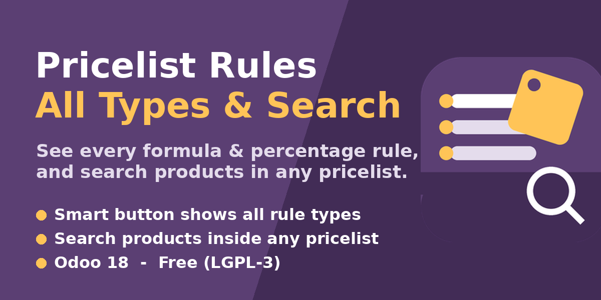
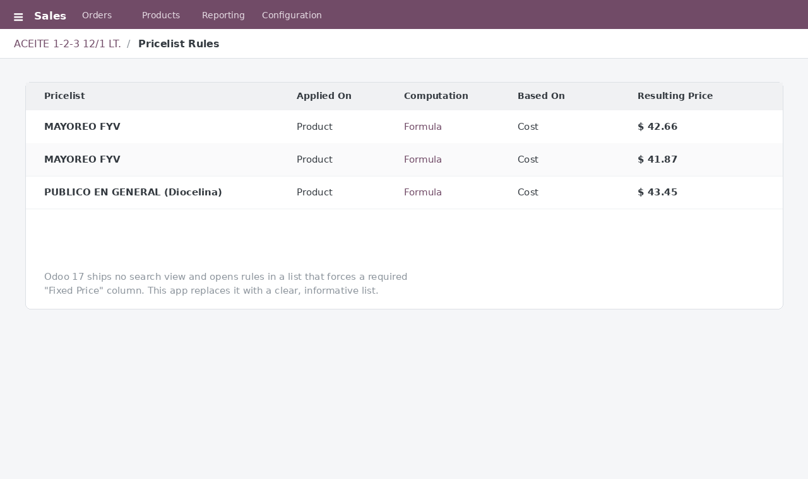
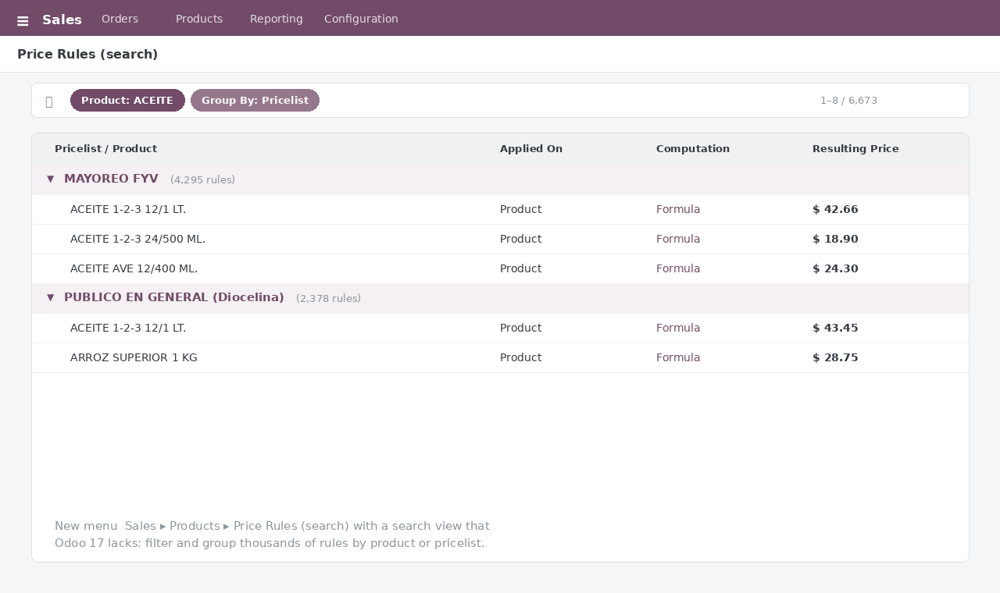

See every pricelist rule on the product smart button — including formula (Cost + margin) and percentage rules — and browse them all from a searchable menu. Free, LGPL-3.
The standard Pricelist Rules list opened from a product forces a required Fixed Price column that makes no sense for formula or percentage rules, and Odoo 17 ships no search view to browse rules across products. This module fixes both.
| Feature | Description |
| Search view | Adds the pricelist-rules search view that Odoo 17 is missing, so rules can be filtered and grouped. |
| Informative list | Opens a list showing the pricelist, the computation method, the base, the margin and the resulting price — no meaningless "Fixed Price" column on formula rules. |
| Searchable menu | Adds Sales » Products » Price Rules (search) to browse the full list of rules with filters and group-by (by product, pricelist, scope, dates…). |
| Zero config | Install and it works. No data migration, no settings. |

